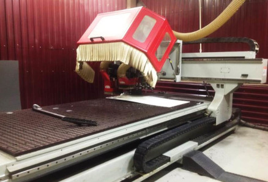
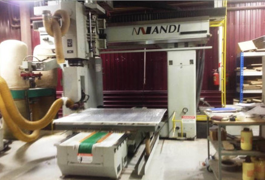

<section class="manufacture page__global">
  <div class="manufacture__inner">

    <h1 class="manufacture__title page__title">Изготовление изделий из термопласта методом механической обработки по контуру

    </h1>
    <ul class="breadcrumb">
      <li class="breadcrumb__item">
        <a class="breadcrumb__link" href="index.html">Главная</a>
      </li>
      <li class="breadcrumb__item">
        <a class="breadcrumb__link" href="manufacture.html">Производство</a>
      </li>
      <li class="breadcrumb__item">Изготовление изделий из термопласта методом механической обработки по контуру

      </li>
    </ul>

    <div class="wrapper">
      <div class="manufacture__gallery part3">
        <div class="manufacture__gallery-item">
          
        </div>
        <div class="manufacture__gallery-item">
          
        </div>
        </div>

    </div>


  </div>
</section>